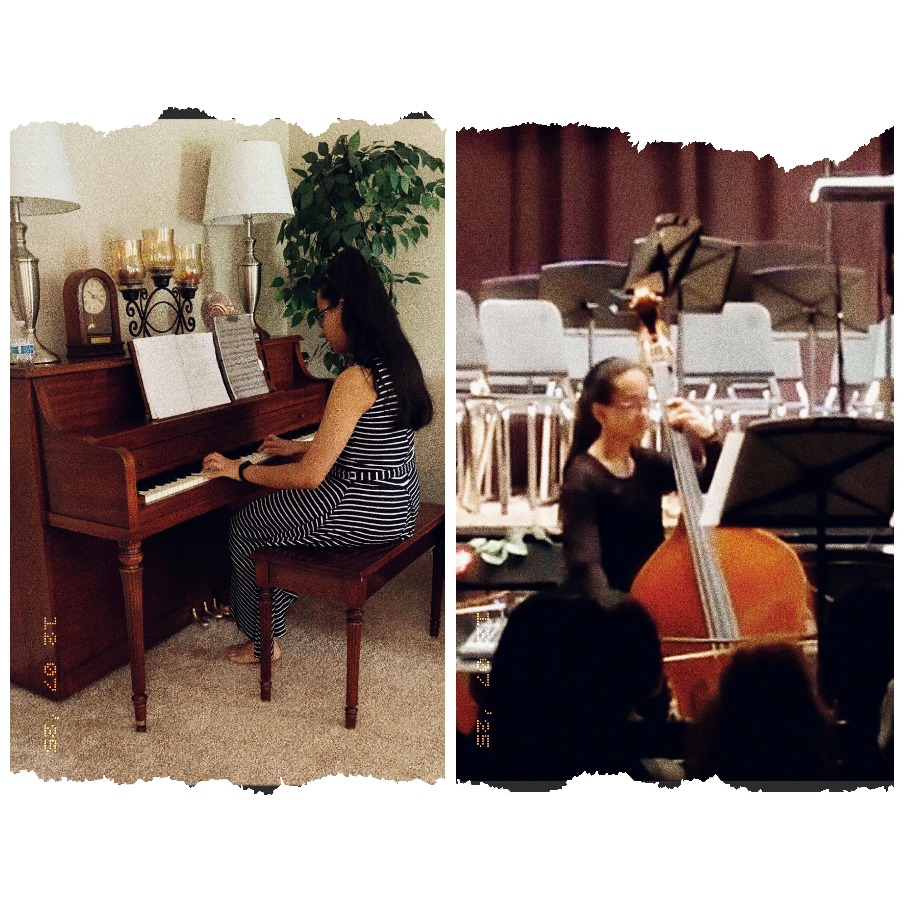

 I have been playing the piano for 9 years and have passed the ABRSM Grade 5 Piano Practical exam. I also started playing the double bass in tenth grade of high school. Within two years, I gained acceptance into a regional orchestra as a 5th chair bassist. I was also a part of my school's chamber orchestra, which received a gold rating at a regional music festival. Along with orchestra, I have experience playing the double bass in the top jazz and lab jazz bands in my high school and competing in state-level jazz competitions. My favorite classical piece to play on the piano is Rondo Alla Turca by W.A. Mozart, and my favorite piece to play on the bass is Cello Sonata No. 3 in A minor, RV 43 by Antonio Vivaldi. Inspired by the orchestra movie soundtrack in How to Train Your Dragon, I hope to similarly be involved in the production of a movie soundtrack by continuing to play the bass and piano in college.
 I passed grade 5 in the ABRSM piano practical exam. I played 'Allegro (3rd movt from Sonata in C minor, C. 68)' by Cimarosa, 'Minnelied (No. 7 from Stimmungsbilder, Op. 88)' by H. Hofmann, and 'In the Groove (from 20 Piano Studies)' by Mike Cornick.
I passed grade 5 in the ABRSM piano practical exam. I played 'Allegro (3rd movt from Sonata in C minor, C. 68)' by Cimarosa, 'Minnelied (No. 7 from Stimmungsbilder, Op. 88)' by H. Hofmann, and 'In the Groove (from 20 Piano Studies)' by Mike Cornick.
 I became the fifth chair bassist in a regional orchestra after a competitive audition process. I played 'Hymn for Everyone' by Jessie Montgomery, 'North' by Joe Marta, and 'Symphony No. 2 (IV - Finale)' by Jean Sibelius.
I became the fifth chair bassist in a regional orchestra after a competitive audition process. I played 'Hymn for Everyone' by Jessie Montgomery, 'North' by Joe Marta, and 'Symphony No. 2 (IV - Finale)' by Jean Sibelius.